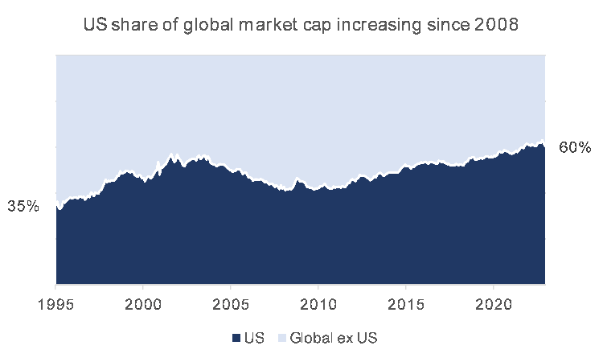
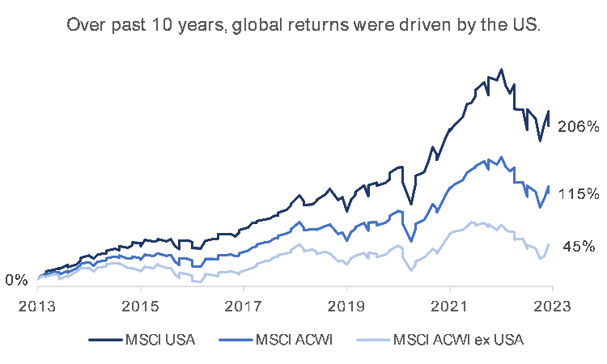
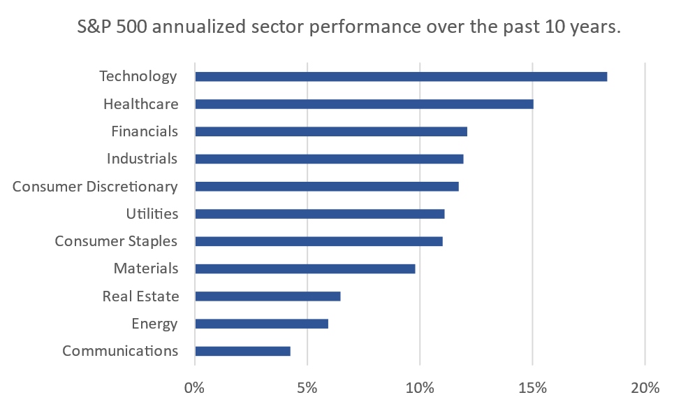
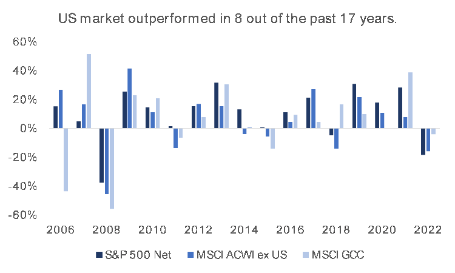
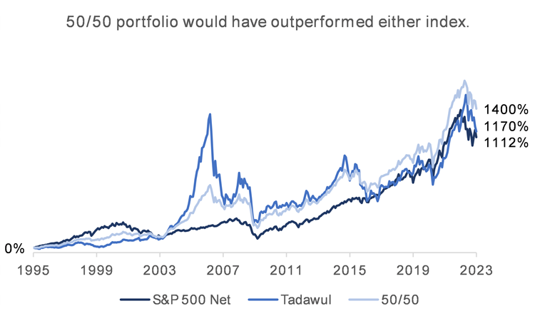

Add a Global Touch to Your Portfolio
“Stick to what you know.” That’s been a common refrain, probably more so when it comes to where to invest. Investors commonly invest far more in their home country than they do elsewhere. This leads to home allocations that are significantly larger than the country’s market-capitalization weight relative to the global portfolio. It may work well, but investors could be leaving a lot on the table.
It’s a big world out there.
The global investible market capitalization of stocks at the end of 2022 stood at USD 63.8 trillion, a figure that captures large, mid, and small cap companies across 46 countries as tracked by MSCI. It’s a big world out there, and for investors, just trying to decide where to invest can sometimes be daunting. There are at least 15 stock exchanges worldwide that have a market cap greater than USD 1 trillion with two of those exchanges dominating the rest. The New York Stock Exchange and the Nasdaq, in the US, account for nearly USD 40 trillion of that USD 63.8 trillion figure.
The US market has been the largest stock market in the world for over a century, consistently dominating the global market capitalization of stocks. In 1995, the US represented 35% of the MSCI ACWI, and as of 2022, the US market represented 60% of global equity markets, or USD 37.5 trillion, after peaking at nearly USD 52 trillion in November 2021.

Economic and market drivers have continued to underpin the US stock market’s outperformance vis-à-vis global markets for many years. As the world’s largest and most liquid market, it has attracted a significant amount of foreign investment, coupled with an economy characterized by stable GDP growth, low unemployment, and a robust consumer market.
Other benefits for international investors buying US stocks include a broader variety of companies and sectors to choose from relative to their home markets, very high levels of transparency and availability of data, a comparatively stable political environment, and lower transaction costs. All these factors combined have contributed to the growth of US capital markets which have outperformed global markets by an annualized 8.0%.

This outperformance has been particularly evident for large-caps. Large-cap stocks have generally been mature companies that are more diversified, both in terms of business and geography, with reputations for producing high quality goods and services, and long histories of consistent dividends. Large-caps are generally more resistant to economic turmoil which has given them a more than 1.5% annualized lead over small- and medium-caps over the past decade.
This resilience became even more apparent during the COVID-19 crisis; with small- and medium-cap falling more sharply compared to larger caps. And while technology stocks have taken the greater share of the post-crisis rally (handily beating the next best sector by over 5% annualized), large-caps from other sectors were also able to take advantage of the rebound; especially healthcare, financials, industrials, and consumer discretionary, all of which beat average small- and medium-cap returns.

Thanks to the ongoing media coverage, troves of free financial data (Google Finance, Yahoo! Finance, MarketWatch, etc.), along with screening tools that are built into financial websites and apps, investors have easy access to information on specific companies and sectors. There’s something for everyone.
How do other markets compare?
To understand how the S&P 500’s performance compares to regional markets, we would need to look at returns from a local perspective. To do this, we assumed two things; that all dividends are reinvested, and that the maximum withholding tax (30%) is applied on dividends before they’re reinvested. This is especially important given that the difference in dividend yield between the two markets is substantial; the S&P 500’s gross dividend yield at the end of 2022 was 1.76% compared to 2.70% for the GCC countries combined.

Based on the above, the S&P 500 has outperformed both global and GCC stocks in eight of the past 17 years on a total return basis, net of withholding taxes. While this is no guarantee of future returns, it emphasizes the importance of diversifying investments and speaks to the vitality of the US market post the 2008 financial crisis– possibly due to the money-printing spree that many central banks embarked on following the crisis, but that’s for another discussion. For now, we’ll compare returns directly.
How do we actually invest?
One way to invest is through exchange traded funds (ETFs). These are funds that have listed shares that can be traded the same way you’d buy stocks and are designed to mimic the performance of indices that they track, such as the S&P 500.
Regional ETFs are relatively new compared to those for developed markets, and while the analysis presented here considers indices rather than actual investments, using net-of-tax total returns brings us relatively close to what an actual investment would have looked like historically had it been done using ETFs. A pan-GCC ETF does not currently exist. However, single country ETFs are available for countries such as Saudi Arabia, Qatar, and the UAE. These are all relatively new and don’t have a lot of performance history to look back on, so we’ll stick to using indices for the time being.
The oldest GCC index with continuous data is the Tadawul All Share Index. Examining it allows us to compare the performance of the largest GCC market, the TASI, to the S&P 500 going back almost 30 years. We can also construct a hypothetical historical portfolio where the investor had put 50% of her cash in each market, the S&P 500 and the TASI. And while a 50/50 split still doesn’t reflect a “global market-cap weighted” approach since the US market is vastly bigger than any other market on the planet, it’s a simple way of diversifying between two markets.

The results are surprising! On a total return basis, and net of taxes, an investment in a broad basket of stocks in the S&P 500 performed nearly as well as one in the TASI, albeit with significantly lower volatility; annualized returns for the S&P 500 were 9.3% vs. 9.5% for the TASI, with standard deviations of 15.3% and 22.6% respectively.
What’s even more interesting is that the 50/50 portfolio returned around 0.75% more per year on average over the 27 years than either index, an annualized return of 10.1%, yet with a volatility of 15.4%, only marginally higher than the S&P 500. Again, past returns are not indicative of future returns.
Sometimes, we feel safe with the familiar, but we may not realize what we’re missing out on. We can count this one as a win for naïve diversification. So, don’t stick with what you know.
Data sources: MSCI, Bloomberg
Analysis: SICO Global Markets